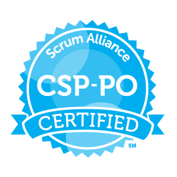

Shawn Wells
- +1-443-534-0130
- shawn.d.wells@gmail.com
- Washington, D.C.
With 20 years of information assurance and technical leadership experience, including being awarded the "2019 Pinacle Award for Cybersecurity Executive of the Year" by WashingtonExec Magazine, and "2014 Rising Star" by Federal Computer Week (FCW) Magazine, Shawn has initiated, led, and managed cybersecurity initiatives supporting commercial, law enforcement, intelligence, defense, and other Homeland Security missions to help customers build their competitive superiority in the cybersecurity domain.
The past decade was spent at Red Hat, an enterprise open source software company focused on operating systems, virtualization/IaaS, and most recently, containers/PaaS (Kubernetes). Joined as an early employee (#236!), initially as a sales engineer holding a $5M quota for the U.S. Intelligence Community. Rapidly progressed from Sales Engineer, Practice Lead, Technical Director, and culminating as Senior Principal, have helped build the Government practice into a $700M+ business unit. In-depth experience navigating teams, initiatives, and products, through stages of substantial growth.
Security clearance details upon request.
Work Experiences
Senior Principal & Chief Security Strategist, U.S. Public Sector, Red Hat
Senior-most leader accountable for information assurance of all Red Hat technologies, products, and U.S. Government programs.
- 1 of 8 Senior Principals globally at Red Hat as or March 2020 (out of 19,000 associates). Only senior leader dedicated to Information Assurance/Cybersecurity in Red Hat's global field sales organization.
- Holding both United States and NATO security clearances, oversee classified capability development between Red Hat, the United States Government, and allied international coalition partners.
- Build a portfolio of information assurance/cybersecurity technology initiatives that will drive future competitive advantage of Red Hat in the Public Sector vertical.
- Collaborate with the U.S. Government to create public/private partnerships relating to trusted computing projects, to include partnering with legal and acquisition departments to remove any intellectual property or contractual concerns.
- Personally accountable for all cybersecurity baselines relating to Red Hat products, as published in the NIST National Checklist Program (the U.S. Government repository of publicly available security checklists that provide low level guidance on security settings).
| FY2020 Q4 | 12/01/2019 - 02/28/2020 | Quiet Period Until 1-APR-2020 | ||||
| FY2020 Q3 | 09/01/2019 - 11/30/2019 | Quarterly Gross Revenue, Software Renewals | $118,752,038 | $116,572,002 | 98.16% | - |
| Quarterly Gross Revenue, Net-New Software | $36,097,084 | $47,920,225 | 132.75% | - | ||
| Quarterly Gross Revenue, Consulting Services | $26,647,962 | $21,981,526 | 82.49% | - | ||
| Management by Objectives (MBO) | 100% | 115% | 115% | - | ||
| FY2020 Q2 | 06/01/2019 - 08/31/2019 | Quarterly Gross Revenue, Software Renewals | $121,276,696 | $132,395,248 | 109.17% | - |
| Quarterly Gross Revenue, Net-New Software | $38,273,230 | $45,013,646 | 117.61% | - | ||
| Quarterly Gross Revenue, Consulting Services | $29,323,304 | $22,176,804 | 75.63% | - | ||
| Management by Objectives (MBO) | 100% | 113% | 113% | - | ||
| FY2020 Q1 | 03/01/2019 - 05/31/2019 | Quarterly Gross Revenue, Software Renewals | $73,336,422 | $76,442,387 | 104.24% | - |
| Quarterly Gross Revenue, Net-New Software | $21,065,433 | $32,329,552 | 153.47% | - | ||
| Quarterly Gross Revenue, Consulting Services | $17,163,578 | $15,076,783 | 87.84% | - | ||
| Management by Objectives (MBO) | 100% | 125% | 125% | - | ||
| Quarterly Gross Revenue, Software Renewals | $313,365,156 | $325,409,637 | 103.84% | - | ||
| Quarterly Gross Revenue, Net-New Software | $95,435,747 | $125,263,423 | 131.25% | - | ||
| Quarterly Gross Revenue, Consulting Services | $73,134,844 | $59,235,113 | 80.99% | - | ||
| Management by Objectives (MBO) | 100% | 117.76% | 117.76% | - | ||
| FY2019 Q4 | 12/01/2018 - 02/29/2019 | Quarterly Gross Revenue, Government Agencies | $179,566,431 | $189,272,230 | 105.41% | +31.63% |
| Quarterly Gross Revenue, Strategic Products | $61,501,920 | $57,196,793 | 93% | - | ||
| Management by Objectives (MBO) | 100% | 125% | 125% | - | ||
| Role Summary: | Quarterly Gross Revenue, Software Renewals | $313,365,156 | $325,409,637 | 103.84% | - | |
| Quarterly Gross Revenue, Net-New Software | $95,435,747 | $125,263,423 | 131.25% | - | ||
| Consulting Services | $73,134,844 | $59,235,113 | 80.99% | - | ||
| Management by Objectives (MBO) | 100% | 117.67% | 117.67% | - | ||
Principal & Chief Security Strategist
U.S. Public Sector
Red Hat
Established partnerships with select federal system integrators and Public Sector agencies to create software technology portfolios which infused Red Hat technologies relevant to trusted computing initiatives. Assist to set direction for sales and technology teams in the U.S. Federal, State, and local government markets for an $700M business unit contributing to an average 18% growth each year. This involves:
- As a member of the Office of the Chief Technologist, partnered with executive leadership to manage a $200M portfolio of strategic product sales and $700M portfolio of end-agency programs.
- Managed security-related projects from idea generation through concept refinement and prototype creation, to commercialization (launch & rollout).
- Created and communicate an cybersecurity conscious culture within product develoment teams. Drove Common Criteria, FIPS, DoD STIGs, and associated NIST 800-53 controls into product development process.
- Served as "trusted advisor" to Department of Defense and the National Security Agency, collaborating to establish nation-state level guidance and security policies on operating systems, hypervisors (IaaS), and middleware (PaaS) across Defence and Intelligence Communities.
- Coached a team of over 50 account executives, 17 business development staff, 53 sales engineers on industry trends.
- Participated in boards, panels, and advisory committees across the U.S. Government. Only vendor to be invited to the DoD Consensus Group, forming mandated security policies for operating systems used across the Department of Defense.
- Co-authored and personally signed off on official Red Hat security baselines, such as DoD STIGs.
| FY2019 Q3 | 09/01/2018 - 11/30/2018 | Quarterly Gross Revenue, Government Agencies | $126,093,726 | $119,815,664 | 95.02% | +15.69% |
| Quarterly Gross Revenue, Strategic Products | $25,577,362 | $23,332,146 | 91.22% | 28.85 | ||
| Management by Objectives (MBO) | 100% | 100% | 100% | - | ||
| FY2019 Q2 | 06/01/2018 - 08/31/2018 | Quarterly Gross Revenue, Government Agencies | $137,917,349 | $142,363,852 | 103.22% | +26.06% |
| Quarterly Gross Revenue, Strategic Products | $37,907,751 | $42,579,985 | 112.33% | +39.09% | ||
| Management by Objectives (MBO) | 100% | 125% | 125% | - | ||
| FY2019 Q1 | 03/01/2018 - 05/31/2018 | Quarterly Gross Revenue, Government Agencies | $103,259,752 | $92,602,099 | 89.68% | +3.10% |
| Quarterly Gross Revenue, Strategic Products | $29,964,871 | $18,798,984 | 62.74% | -19.63% | ||
| Management by Objectives (MBO) | 100% | 125% | 125% | - | ||
| Quarterly Gross Revenue, Government Agencies | $546,837,258 | $544,053,845 | 99.49% | +77.61% | ||
| Quarterly Gross Revenue, Strategic Products | $154,951,904 | $141,907,908 | 91.58% | +96.79 | ||
| Management by Objectives (MBO) | 100% | 119% | 119% | - | ||
| FY2018 Q4 | 12/01/2017 - 02/28/2018 | Quarterly Gross Revenue, Government Agencies | $159,390,743 | $143,796,170 | 90.22% | +27.57% |
| Quarterly Gross Revenue, Strategic Products | $41,811,381 | $38,011,679 | 90.91% | - | ||
| Management by Objectives (MBO) | 100% | 125% | 125% | - | ||
| FY2018 Q3 | 09/01/2017 - 11/30/2017 | Quarterly Gross Revenue, Government Agencies | $103,584,479 | $103,567,656 | 99.98% | +15.84% |
| Quarterly Gross Revenue, Strategic Products | $21,787,258 | $18,107,841 | 83.11% | - | ||
| Management by Objectives (MBO) | 100% | 125% | 125% | - | ||
| FY2018 Q2 | 06/01/2017 - 08/31/2017 | Quarterly Gross Revenue, Government Agencies | $108,129,565 | $112,934,645 | 104.44% | +21.39% |
| Quarterly Gross Revenue, Strategic Products | $33,948,658 | $30,614,320 | 90.18% | - | ||
| Management by Objectives (MBO) | 100% | 127% | 127% | - | ||
| FY2018 Q1 | 03/01/2017 - 05/31/2017 | Quarterly Gross Revenue, Government Agencies | $86,225,218 | $89,816,150 | 104.13% | +7.35% |
| Quarterly Gross Revenue, Strategic Products | $25,814,757 | $23,390,645 | 90.61% | - | ||
| Management by Objectives (MBO) | 100% | 117% | 117% | - | ||
| Quarterly Gross Revenue, Government Agencies | $457,360,005 | $450,114,621 | 98.42% | +18.04% | ||
| Quarterly Gross Revenue, Strategic Products | $123,362,054 | $110,124,485 | 89.27% | - | ||
| Management by Objectives (MBO) | 100% | 123.50% | 123.50% | - | ||
| FY2017 Q4 | 12/01/2016 - 02/28/2017 | Quarterly Gross Revenue, System Integrators | $31,715,368 | $33,614,924 | 105.99% | +11.54% |
| Quarterly Gross Revenue, Government Agencies | $113,168,001 | $112,716,590 | 99.60% | 38.81% | ||
| FY2017 Q3 | 09/01/2016 - 11/30/2016 | Quarterly Gross Revenue, System Integrators | $31,592,702 | $26,478,098 | 83.81% | -28.00% |
| Quarterly Gross Revenue, Government Agencies | $105,801,202 | $89,401,929 | 84.50% | 4.47% | ||
| FY2017 Q2 | 06/01/2016 - 08/31/2016 | Quarterly Gross Revenue, System Integrators | $26,822,064 | $24,589,007 | 91.67% | -0.44% |
| Quarterly Gross Revenue, Government Agencies | $97,529,595 | $93,034,181 | 95.39% | +19.64% | ||
| FY2017 Q1 | 03/01/2016 - 05/31/2016 | Quarterly Gross Revenue, System Integrators | $26,049,679 | $25,567,074 | 98.15% | -25.47% |
| Quarterly Gross Revenue, Government Agencies | $81,556,737 | $83,667,495 | 102.59% | +17.37% | ||
| Quarterly Gross Revenue, System Integrators | $116,179,813 | $110,249,103 | 94.90% | -10.59%% | ||
| Quarterly Gross Revenue, Government Agencies | $398,056,535 | $378,820,105 | 95.17% | +20.07% | ||
| FY2016 Q4 | 12/01/2015 - 02/29/2016 | Quarterly Gross Revenue, System Integrators | $31,523,100 | $30,137,069 | 95.60% | +2.94% |
| Quarterly Gross Revenue, Government Agencies | $80,316,696 | $81,199,821 | 101.10% | +19.83% | ||
| FY2016 Q3 | 09/01/2015 - 11/30/2015 | Quarterly Gross Revenue, System Integrators | $33,786,900 | $36,772,831 | 108.84% | +35.01% |
| Quarterly Gross Revenue, Government Agencies | $41,101,148 | $34,319,657 | 83.49% | +2.94% | ||
| Quarterly Gross Revenue, System Integrators | $65,310,000 | $66,909,900 | 102.45% | +18.97% | ||
| Quarterly Gross Revenue, Government Agencies | $163,080,204 | $166,779,351 | 102.45% | +19.02% | ||
| Role Summary: | Quarterly Gross Revenue, System Integrators | $181,489,813 | $177,159,003 | 97.61% | -0.74% | |
| Quarterly Gross Revenue, Government Agencies | $1,565,334,002 | $1,539,767,992 | 98.37% | +18.10% | ||
| Quarterly Gross Revenue, Strategic Products | $278,313,958 | $252,032,393 | 90.56% | +16.10% | ||
| Management by Objectives (MBO) | 100% | 120.57% | 120.57% | - | ||
Director, Innovation Programs
U.S. Public Sector
Red Hat
Drove net-new capability development in the U.S. Public Sector market. Delivered a total of $256M against $247M system integrator/"sell-through" quota (104%) plus $636.5M against $651M government/"sell-to" quota (98%) while in the role. Awarded "2014 Rising Star" by Federal Computer Week (FCW) Magazine.
Utilizing the rapid innovation that open source technology development enables, and through an engineering rigor process, produced mission-quality technology for the United States Government market. Specifically, led "Radical Innovations," defined as technologies that were new to existence, and "Next Generation," which pushed existing technologies into different operating windows. Initiatives included:
- Collaborated with Lockheed Martin to consolidate mission high performance computing (HPC) environments onto a single cross-domain platform, saving $25M+ for a U.S. Intelligence Community customer. Built extensive personal and professional relationships leading to customer co-presenting solution publicly at the Super Computing 2015 conference.
- Prepared Linux for use in tactical vehicles and unmanned aerial vehicles (UAVs) for the U.S. Army, driving cyber security capabilities for safety-critical use cases.
- Partnered with NSA Information Assurance and NIST to develop and ship security automation content,
reducing average security validation of RHEL from 10+ hours to 30-90 seconds. This automation was fundamental in
helping the U.S. Government prepare for DevOps; prior solutions required manual inspection that would prevent continuous
integration and continuous delivery (CI/CD).
Nurtured customer relationship over multiple years, which lead to the National Security Agency speaking publicly about this public-private partnership at conferences:
As a senior member of the North America Public Sector practice:
- In partnership with (and direct report to) the Vice President of Public Sector Business Development, grew portfolio of System Integrator business from $87M to $126M over two fiscal years while averaging +26.43% quarterly YoY growth. Major accounts included Lockheed Martin, Accenture, General Dynamics, and Northrup Grumman.
- In support of the SVP and General Manager of North America Public Sector, aided top-line business unit growth from $228M to $316M while averaging +20.97% quarterly YoY growth.
| FY2016 Q2 | 06/01/2015 - 08/31/2015 | Quarterly Gross Revenue, System Integrators | $31,208,000 | $24,698,526 | 79.14% | -17.60% |
| Quarterly Gross Revenue, Government Agencies | $79,792,983 | $77,761,911 | 97.45% | +11.99% | ||
| FY2016 Q1 | 03/01/2015 - 05/31/2015 | Quarterly Gross Revenue, System Integrators | $29,273,000 | $34,303,727 | 117.19% | +46.06% |
| Quarterly Gross Revenue, Government Agencies | $62,854,592 | $71,284,862 | 113.41% | +42.38% | ||
| Quarterly Gross Revenue, System Integrators | $60,481,000 | $59,002,253 | 97.56% | +14.25% | ||
| Quarterly Gross Revenue, Government Agencies | $142,647,575 | $149,046,773 | 104.49% | +27.19% | ||
| FY2015 Q4 | 12/01/2014 - 02/28/2015 | Quarterly Gross Revenue, System Integrators | $27,893,024 | $29,276,563 | 104.96% | +19.9% |
| Quarterly Gross Revenue, Government Agencies | $67,888,493 | $67,763,327 | 99.82% | +13.14% | ||
| FY2015 Q3 | 09/01/2014 - 11/30/2014 | Quarterly Gross Revenue, System Integrators | $29,170,515 | $27,237,222 | 93.37% | +19.62% |
| Quarterly Gross Revenue, Government Agencies | $70,997,764 | $72,394,434 | 101.97% | +8.42% | ||
| FY2015 Q2 | 06/01/2014 - 08/31/2014 | Quarterly Gross Revenue, System Integrators | $32,533,750 | $29,962,802 | 92.10% | +12.90% |
| Quarterly Gross Revenue, Government Agencies | $79,183,500 | $69,434,583 | 87.69% | +3.99% | ||
| FY2015 Q1 | 03/01/2014 - 05/31/2014 | Quarterly Gross Revenue, System Integrators | $16,969,983 | $23,485,306 | 138.39% | +77.72% |
| Quarterly Gross Revenue, Government Agencies | $41,303,036 | $50,066,472 | 121.22% | +45.88% | ||
| Quarterly Gross Revenue, System Integrators | $106,567,272 | $109,961,892 | 103.19% | +26.46% | ||
| Quarterly Gross Revenue, Government Agencies | $259,372,793 | $259,658,816 | 101.11% | +14.01% | ||
| FY2014 Q4 | 12/01/2013 - 02/28/2014 | Quarterly Gross Revenue, System Integrators | $21,561,634 | $24,430,815 | 113.31% | - |
| Quarterly Gross Revenue, Government Agencies | $63,122,960 | $59,895,105 | 94.89% | - | ||
| FY2014 Q3 | 09/01/2013 - 11/30/2013 | Quarterly Gross Revenue, System Integrators | $20,603,339 | $22,770,672 | 110.52% | - |
| Quarterly Gross Revenue, Government Agencies | $72,494,969 | $66,770,366 | 92.10% | - | ||
| FY2014 Q2 | 06/01/2013 - 08/31/2013 | Quarterly Gross Revenue, System Integrators | $24,516,375 | $26,539,303 | 108.25% | - |
| Quarterly Gross Revenue, Government Agencies | $72,494,969 | $66,770,366 | 92.10% | - | ||
| FY2014 Q1 | 03/01/2013 - 05/31/2013 | Quarterly Gross Revenue, System Integrators | $13,176,554 | $13,214,983 | 100.29% | - |
| Quarterly Gross Revenue, Government Agencies | $41,101,148 | $34,319,657 | 83.49% | - | ||
| Quarterly Gross Revenue, System Integrators | $79,857,920 | $86,955,733 | 108.89% | - | ||
| Quarterly Gross Revenue, Government Agencies | $249,214,046 | $227,755,494 | 91.39% | - | ||
| Role Summary: | Quarterly Gross Revenue, System Integrators | $246,906,174 | $255,919,918 | 103.65% | +26.43% | |
| Quarterly Gross Revenue, Government Agencies | $651,234,414 | $636,461,083 | 97.73% | +20.97% | ||
Technical Director, Intelligence Programs
U.S. Public Sector
Red Hat
Accountable for end-to-end ownership of Red Hat's technical commitments to all 17 elements the United States Intelligence Community. Delivered $49.25M against $49.29M total quota while in role.Increased annual bookings from $8.1M in FY2011 to $19.4M in FY2012 while realizing an average 222.97% YoY quarterly revenue growth.
Engaged the Intelligence Community in internal venturing and entrepreneurship to help create and incubate new ideas, and drive enabling technologies. Supported the increased use of open source technology to enable the Intelligence Community to carry out its mission better, with improved technologies and services at lower cost. Key wins include:
- Worked with the FBI National Data Exchange (N-Dex), a multi-year effort to gather crime and incident data from the nation's 18,000-plus law enforcement agencies into a single, web-accessible investigative tool. Solution delivered 99.8% uptime, over 3,000 concurrent users, and scaled to ingest over one million new records per day. Customer go-live was covered by Government Computer News Magazine.
- Partnered with DoDIIS Software Licensing Team to establish first Red Hat Enterprise Liscense Agreement (ELA) with the Defense Intelligence Agency (DIA). Awarded Red Hat's "Public Sector Deal of the Year" award.
- Negotiated with CIA Software Acquisition on the first Red Hat Blanket Purchase Agreement (BPA) for use across all directorates of the Central Intelligence Agency.
- Coordinated cooperation from internal Red Hat groups and Intelligence Community partners to leverage cross-functional and multi-agency resources in pursuit of clandestine and overt mission system designs and deployments.
As the technical leader for the Intelligence Community market:
- Recruited and shaped technical pre-sales team. This included staff management, budgeting, territory planning, process development, customer escalations, product management liason, and forecasting.
- Created and managed engagements with external ecosystems across industry (e.g. system integrators, ISVs) to currate technologies and offerings for direct application to Intelligence Community missions. Particular focus on covert communication ingress, exfiltration, and data manipulation.
As a leader within Red Hat:
- Working internally to Red Hat, syndicated the success of the U.S. Intelligence Community team to global commercial and government markets with training, shared resources, and common marketing material.
- Assisted with building pre-sales leadership development strategies and facilitated related training programs, with a focus on maturing/professionalization of the pre-sales engineering process and frameworks.
| FY2013 Q4 | 12/01/2012 - 02/28/2013 | Annual Gross Revenue | $21,897,909 | $19,379,497 (+$7,106,324) |
88.50% | -37.44% |
| FY2013 Q3 | 09/01/2012 - 1/130/2012 | Annual Gross Revenue | $21,897,909 | $12,273,173 (+$5,292,410) |
56.05% | +194.30% |
| FY2013 Q2 | 06/01/2012 - 08/31/2012 | Annual Gross Revenue | $21,897,909 | $6,980,763 (+$4,555,630) |
31.88% | +6.57% |
| FY2013 Q1 | 03/01/2012 - 05/31/2012 | Annual Gross Revenue | $21,897,909 | $2,425,133 | 11.07% | +25.45% |
| $21,897,909 | $19,379,497 | 88.50% | +0.08% | |||
| FY2012 Q4 | 12/01/2011 - 02/28/2012 | Quarterly Gross Revenue | $10,815,500 | $11,358,625 | 105.02% | +140.20% |
| FY2012 Q3 | 09/01/2011 - 11/30/2011 | Quarterly Gross Revenue | $1,503,335 | $1,798,310 | 119.62% | +51.62% |
| FY2012 Q2 | 06/01/2011 - 08/31/2011 | Quarterly Gross Revenue | $971,767 | $4,274,613 | 439.88% | +566.71% |
| FY2012 Q1 | 03/01/2011 - 05/31/2011 | Quarterly Gross Revenue | $1,640,373 | $1,933,106 | 117.85% | +169.11% |
| $14,930,975 | $19,364,658 | 129.69% | +139.03% | |||
| FY2011 Q4 | 12/01/2010 - 02/28/2011 | Annual Gross Revenue | $10,658,350 | $8,101,460 (+$5,555,930) |
76.01% | +130.89% |
| FY2011 Q3 | 09/01/2010 - 11/30/2010 | Annual Gross Revenue | $10,658,350 | $2,545,530 (+$1,186,059) |
23.88% | |
| FY2011 Q2 | 06/01/2010 - 08/31/2010 | Annual Gross Revenue | $10,658,350 | $1,359,471 (+$641,150) |
12.75% | |
| FY2011 Q1 | 03/01/2010 - 05/31/2010 | Annual Gross Revenue | $10,658,350 | $718,321 | 6.74% | |
| $10,658,350 | $8,101,460 | 76.01% | ||||
| FY2010 Q4 | 12/01/2009 - 02/28/2010 | Quarterly Gross Revenue | $1,800,000 | $2,406,317 | 133.68% | - |
| Role Summary: | $49,287,234 | $49,251,928 | 99.93% | +134.63% | ||
Practice Lead, Global System z Sales, Strategy, and Marketing
Global Business Development
Red Hat
Lead international team which developed and executed Red Hat's go-to-market strategy for the IBM System z platform. Reporting through the Global VP of Business Development, and accountable to the SVP of Worldwide Sales, delivered 7.7% of Red Hat's then global revenue. Averaged 123% quarterly attainment while in role.
Over approximately 18 months, achieved the following:
- Increased annual System z platform gross revenue from $5.2M to $34.9M (+570%) by diversifying sales from predominately operating system products to include Java middleware and systems management.
- Global Linux on System z subscription sales increased by 68.53% (APAC +272.65%, EMEA +190.07%, Americas +64.22%).
- Gartner-estimated Linux on System z market share increased from 18.36% to 45.98%, reflecting the sale of more net-new Red Hat deployments than net-new IBM hardware sales (significant displacement of competitors, primarily Novell SuSE).
- Collaborated with Asia-Pacific, European, and Americas leadership to standardize System z operations globally (sales plays, deal registrations, order management, engineering processes). Achieved per-unit net revenue (margin) increase from $3,024/year to $10,530/year, primarily from efficiencies gained in the Latin America markets.
- Performed technology assessments against Red Hat competitors (primarily SuSE). Managed Red Hat roadmap to eliminate or reduce competitor's real and perceived market advantages.
- Established net-new formal reference customers across global sectors including government,
manufacturing, banking, insurance, and other key industries. Examples include:
- Bank of New Zealand (ANZ, Banking)
- Handelsbanken (EMEA, Banking)
- City of Recife, Brazil (LATAM, Government)
- Salt River Project (North America, Public Utilities)
- Fratelli Carli (EMEA, Manufacturing)
- Allianz (APAC, Insurance)
Achieved the following fiscal results:
| FY2010 Q3 | 09/01/2009 - 11/30/2009 | Quarterly Gross Revenue | [redacted] | [redacted] | 87.16% | +14.22% |
| FY2010 Q2 | 06/01/2009 - 08/31/2009 | Quarterly Gross Revenue | [redacted] | [redacted] | 143.83% | +50.51% |
| FY2010 Q1 | 03/01/2009 - 05/31/2009 | Quarterly Gross Revenue | [redacted] | [redacted] | 84.02% | - |
| 105.00% | - | |||||
| FY2009 Q4 | 12/01/2008 - 02/28/2009 | Quarterly Gross Revenue | [redacted] | [redacted] | 206.63% | - |
| FY2009 Q3 | 09/01/2008 - 11/30/2008 | Quarterly Gross Revenue | [redacted] | [redacted] | 159.49% | - |
| FY2009 Q2 | 06/01/2008 - 08/31/2008 | Quarterly Gross Revenue | [redacted] | [redacted] | 79.63% | - |
| 148.59% | - | |||||
| Role Summary: | - | - | 118.38% | - | ||
Solution Architect, Intelligence Programs
U.S. Public Sector
Red Hat
Performed as part of a two-member technical account management team tasked with owning the technical/engineering relationship with the U.S. Intelligence Community (especially focused on NSA, CIA, and the NGA). Delivered $14.8M against $5.4M quota while in role.
- Assisted Intelligence Community mission elements to prepare, shape, and execute electronic battle spaces with Open Source software.
- Collaborated with Intelligence Community partners on coordinating Computer Network Operations (CNO) into Electronic Warfare (EW) capabilities. This group was originally known as Tailored Access Operations (TAO).
- In support of DCID 6/3 and NIST 800-53 certification activities, assisted NSA perform vulnerability assessments, threat assessments, and mitigation and reporting activities for open source software.
- Developed reference architectures for "solution stacks," pre-integrated networking, hardware, and software solutions utilizing multiple elements from the Red Hat product portfolio.
- Technical responsibility for problem identification, system architecture definition, hardware/software specifications, and implementation, for NSA, CIA, and NGA partnerships.
- Provided market insights to corporate engineering teams to ensure Red Hat technologies and services best supported the U.S. Intelligence Community needs.
Sharing quota with one other teammate, drove adoption and consumption of Red Hat technologies and services within the U.S. Intelligence Community. Primary performance measurement was quota achievement, with results outlined below:
| FY2009 Q1 | 03/01/2008 - 05/31/2008 | Quarterly Gross Revenue, Software | $1,750,000 | $1,342,675 | 76.72% | - |
| Quarterly Gross Revenue, Consulting Services | $350,000 | $794,937 | 227.17% | - | ||
| FY2008 Q4 | 12/01/2007 - 02/29/2008 | Quarterly Gross Revenue | $3,306,000 | $12,692,035 | 383.91% | - |
| Role Summary: | $5,406,000 | $14,829,647 | 274.32% | - | ||
Senior Consultant
Zot, Inc
Returning to startup roots, joined Zot as an early-stage employee. Embedded within Government teams at the National Security Agency (NSA) and Central Intelligence Agency (CIA), focused on information security, Linux architecture baselines, and creation of virtualization environments.
- Lead consultant for the NSA-wide security approval of Red Hat Enterprise Linux 5. Authored full accreditation package which included Linux baselines, Privileged User Guides (PUGs), Concept of Operations (CONOPS), and Security Requirement Traceability Matrixes (SRTMs).
- Senior consultant to the Central Intelligence Agency's Unix Services Branch (USB) and Enterprise Integration Branch (EIB), responsible for the Red Hat Enterprise Linux 6 baseline creation (CIA's first NIST 800-53 baseline implementation).
- Senior System Administrator for the NSA BBTUX system, a private cloud computing environment offering infrastructure-as-a-service (IaaS). Underlying infrastructure was Linux on IBM System z (s390x).
- Developed, presented, and executed success strategy plans including an active communication plan, technical engineering, and process/workflow improvement for all consulting engagements.
Senior System Administrator
Navstar, Inc
Lead the infrastructure engineering/architecture team responsible for the primary intelligence dissemination systems between the Central Intelligence Agency and other civilian and military stakeholders; namely, the DISSEM and CIA World Intelligence Review (WIRe) portal.
- Mentored junior and mid-level staff, providing guidance and review of project management processes and technical architectures.
- Designed capacity planning and scalability process, leading to the upgrade of SUN v440, v880, and v890 systems to the SUN T2000 series. This resulted in additional capacity to serve several thousand simultaneous users across the U.S. Intelligence Community while maintaining an average page load time under 1.5 seconds.
IT Architect, Division 16 (Intelligence Community Programs)
IBM Global Business Services
Worked on the SEMORAN/CORNERSTONE program for the National Security Agency (NSA). Developed intelligence collection systems that provided mission elements the ability to “drop ship” pre-built systems to remote sites, power them on, and the collection system would automatically connect to regional sensors.
- Performed as the lead developer of Web Hosting services (Apache, SQUID, BEA WebLogic).
- Responsible for developing automated system installation and initialization process upon equipment power-on, ensuring consistent field deployment processes globally.
- Authored middleware/messaging components, allowing collection subsystems to gather and disseminate sensor data between software-based system components.
Level II System Administrator (Team Lead)
CyberCore Technologies
Led investigations and studies of compromising electronic emissions with a specific aim to identify and mitigate electrical, mechanical and acoustical energy emission vulnerabilities of Lexmark MFD equipment.
- Work performed as part of an Emission Security (EMSEC) initiative, under the broader NSA TEMPEST Certification Program.
- As the team lead, worked with Information System Security Engineers (ISSEs) to accredit systems against DCID 6/3 Protection Level 3 (PL3) requirements.
Secure Systems Administrator
ProObject, Inc
Having recently built a SCIF, ProObject required a Systems Administrator to design and operate corporate IT infrastructure in their classified environments.
- Operations and maintenance of network infrastructure (Cisco PIX, Catalyst 6500s).
- Designed data center infrastructure (Active Directory, Windows Desktop, Red Hat Enterprise Linux).
- Authored Certification and Accreditation (C&A) packages following NSA regulations such as DCID 6/3 and the National Industrial Security Program Operating Mangual (NISPOM).
Computer Programmer (Java and PHP Developer)
National Security Agency (NSA)
Authored software in C, C++, PHP and Java to ingest, exploit, analyze and present signals intelligence information from High Powered Cell Phone (HPCP) collections.
- Work performed under S31121, SIGINT Survey and Analysis Branch, Data Management Team.
- Designed systems to quickly characterize and define new SIGINT collections, process complex multi-channel signals, and run protocol decompression algorithms.
- Served as lead developer for the NSA Spring Offensive Database (SODB), the Al-Qaeda Senior Leadership SIGINT DB (AQSLDB), and the S3 High Power Cell Phone Database (HPCPDB).
- Through formal awards, recognized by branch chief (Army CWO4) for bringing NSA "tasking and tracking databases into the 21st century" and saving hundreds of man-hours per year at the NSA division level.
Senior Technician,
DSL Support
ToadNet, Inc
Boutique Internet Service Provider (ISP) startup which provided internet access and web hosting to more than 29,000 businesses and homes in the Baltimore/Washington corridor and on the Eastern Shore.
Initial role as helpdesk for 56k dial-up services. Grew into Senior Technician, working hands-on in the network operations center (NOC) to expand offerings from 56k dial-up to broadband ISDN and DSL services.
- System administration of core network fabric. Primarily Cisco PIX firewalls and Catalyst switches.
- Responsible for production readiness of Apache, FTP, SAMBA, LVS, BIND, SENDMAIL, EXIM, and Postgres servers.
- Wrote administrative Perl and shell (bash, csh) scripts for automation of system tasks.
- Reviewed/screened resumes for alignment with potential positions. Scheduled and conducted interviews.
After becoming the largest private ISP in the Mid-Atlantic region, ToadNet was acquired for $2.6 million.
Certifications
ARTIFICIAL INTELLIGENCE
|
|
|
|
|---|---|---|
|
NVIDIA Certificate of Competency |
Cybersecurity / Information Assurance


Project Management
|
|
|
|
|---|---|---|
 |
||
|  | ||
 |
||
U.S. Government Certifications / Ratings
Education
IN PROGRESS
|
|
Harvard University |
|
|
|
Imperial College of London |
COMPLETED
|
|
National Cryptologic School267 credit hours of combined classified and unclassified graduate and doctoral level training through the National Cryptological School at Fort Meade / National Security Agency. Focused on Global Networks, Operational Assurance, Information Assurance, and Operational COMSEC. |
|
|
|
Carnegie Mellon University, Heinz
College |
|
|
|
Georgetown University, School of Continuing
Studies |
|
|
|
MIT, Sloan School of Management | |
|
|
MIT, Sloan School of Management |
|
|
|
Stanford University, Center for Professional
Development |
PLANNED
|
|
University of Oxford, Saïd Business School |
|
|
|
Yale School of Management |
Press, Media, Public Speaking
|
2019-11-12 |
Press |
"2019 Pinnacle Awards: Cybersecurity Industry Executive of the Year: Shawn Wells", Washington Exec Magazine |
|
2019-07-24 |
Speaking |
"FedRAMP: Getting to Success - Red Hat", slides available for download, Carahsoft-ATARC Federal Cloud Marketplace Forum |
|
2018-11-02 |
Press |
"Enabling the cyber workforce through the Open Organization", WTOP News |
|
2018-10-31 |
Press |
"How States Need to Tackle Cybersecurity", authored article, StateTech Magazine |
|
2018-10-30 |
Speaking |
"Compliance as Code: Automate Compliance Using Open Source Technology", webinar co-presented with Atif Chaughtai (Chief Technologist, Healthcare, North America, Red Hat), HIMSS |
|
2018-10-15 |
Media |
"Televised Interview: Talking Transformation: Cyber Trends", CNBC/ABC Channel 7 News Interview (GovMatters TV program) |
|
2018-10-04 |
Press |
"Navigating the Cybersecurity Cyclone", authored article, CivSource |
|
2018-07-26 |
Press |
"How Federal Cybersecurity Standards Reach State, Local Governments. An interview with Shawn Wells", GovLoop (pg 17) |
|
2018-07-26 |
Press |
"The Value of Cybersecurity Standards At All Levels of Government", GovLoop |
|
2018-01-25 |
Speaking |
"(Government Only Executive Breakfast) Real World Cyber Attacks: How Feds Can Prepare for the Next Wave", co-hosted with John Felker (Assistant Director, Integrated Operations Division (IOD), DHS' Cybersecurity and Infrastructure Security Agency (CISA)), Meritalk |
|
2017-10-11 |
Speaking |
"OpenStack Compliance Speed and Agility: Yes, It's Possible", co-presented with Keith Basil (Product Manager, OpenStack Platform, Red Hat), OpenStack Summit Syndey |
|
2017-10-11 |
Press |
"Immutable infrastructure can ease agencies into agile, DevOps", WTOP News |
|
2017-09-14 |
Speaking |
"Keynote Speaker, September 2017 Membership Meeting", AFCEA Fort Knox Gold Vault Chapter |
|
2017-07-12 |
Press |
"The New Era of Digital Security", GovLoop |
|
2017-07-12 |
Press |
"Changing the Open Hybrid Cloud Game", GovLoop |
|
2017-06-22 |
Speaking |
"Talking Tech: Securing Emerging Technologies in Government", Executive Roundtable with Edward Rhyne (Program Manager, Cyber Security Division, Homeland Security Advanced Research Projects Agency (HSARPA), DHS), Frank Konieczny (CTO, United States Air Force), Adrian Monza (Chief, Cyber Defence Branch, USCIS), FedInsider |
|
2017-06-16 |
Media |
"Televised Interview: Red Hat's Shawn Wells on federal cybersecurity", FedScoop TV Interview |
|
2017-05-15 |
Speaking |
"What is needed to build trusted infrastructures?", panel moderator, guest speakers were Jeffrey Blank (Technical Director, NSA Information Assurance) and CPT Christopher Apsey (Deputy Director, Technical College, Army Cyber School), Red Hat Summit 2017 |
|
2017-04-28 |
Press |
"Why compliance demands a DevOps approach", authored article, Federal Computing Weekly (FCW) Magazine |
|
2017-02-17 |
Speaking |
"Integrated Solutions for Trusted Clouds and SDI", co-presented with Steve Orrin (Federal CTO, Intel Corp), RSA Conference |
|
2016-10-05 |
Speaking |
"Driving Innovation: Public-Private Partnerships and the Future of Army Capability in Cyberspace," keynote panel with LTG Edward Cardon, Raj Shah, COL Peter Newell, BG(P) Patricia Frost, Association of the United States Army (AUSA) Conference. |
2016-08-03 |
Speaking |
"Challenges of Critical Infrastructure Protection," keynote panel with LTG Rhett Hernandez, MG Bruce Crawford, RADM William Leighner, AFCEA TechNet Augusta. |
|
2016-08-03 |
Press |
"When Hackers Corrupt GPS Data", Signal Magazine |
|
2016-08-03 |
Press |
"Facing the Truth on Cyber", Signal Magazine |
|
2016-05-25 |
Media |
"Televised Interview: Red Hat's Shawn Wells talks cyber policy and innovation", FedScoop TV Interview |
|
2015-12-01 |
Speaking |
"Securing the Use and Lifecycle of Open Source Software", co-presented Josh Corman (SonaType), Mike Pittenger (BlackDuck Software), and Joshua Bressers (Red Hat), U.S. Government Software and Supply Chain Assurance Winter Working Group 2015 |
|
2015-11-15 |
Speaking |
"Architecting, Implementing, and Supporting Multi-Level Security Ecosystem in HPC, ISR, Big Data Analysis and Other Environments", co-presented with Joe Swartz (Chief Scientist, Lockheed Martin), Nathan Rutman (Seagate Technology), Bob Laurence (Crunchy Data), Carl Smith (Altair Engineering), Joshua Koontz (Lockheed Martin), and Sarah Storms (Lockheed Martin), Super Computing 2015 |
|
2015-06-12 |
Speaking |
"Consumer to Collaborator: Re-Imagining the US Government's Role in Open Source", DevOpsDays DC |
|
2015-05-15 |
Media |
"Secure Cloud Computing Progress & Best Practices", WTOP/Federal News Radio Interview |
|
2014-11-30 |
Press |
"Federal Computing Weekly Magazine Rising Star Award", FCW Magazine |
|
2014-11-25 |
Press |
"2014: A Year of Open Source Miracles", opensource.com |
|
2013-12-03 |
Media |
"Big Savings with Multi-level Security in Altair PBS Pro", Inside HPC Magazine |
|
2013-12-03 |
Media |
"iTen Wired Interview", Pensacola Chamber of Commerce |
|
2013-12-03 |
Press |
"Trusted Computer Solutions Introduces Automated Lock Down Solution for Red Hat Enterprise Linux on IBM System z", Press Release, Raytheon Trusted Computer Solutions |